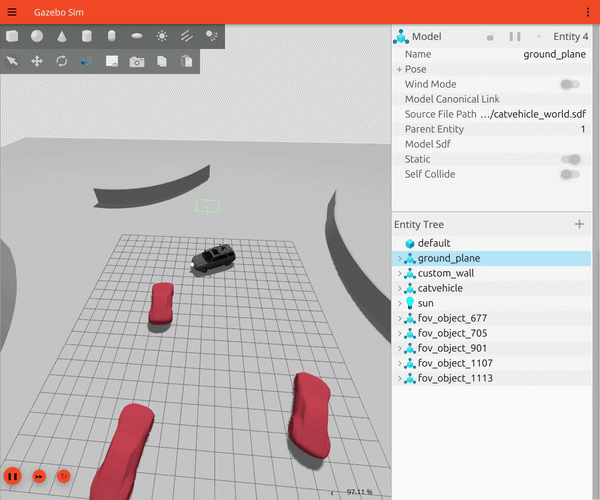
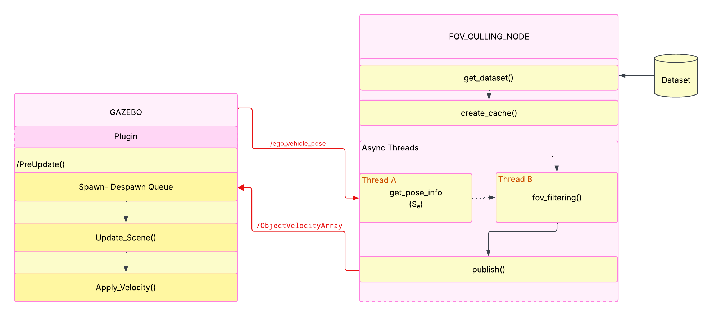
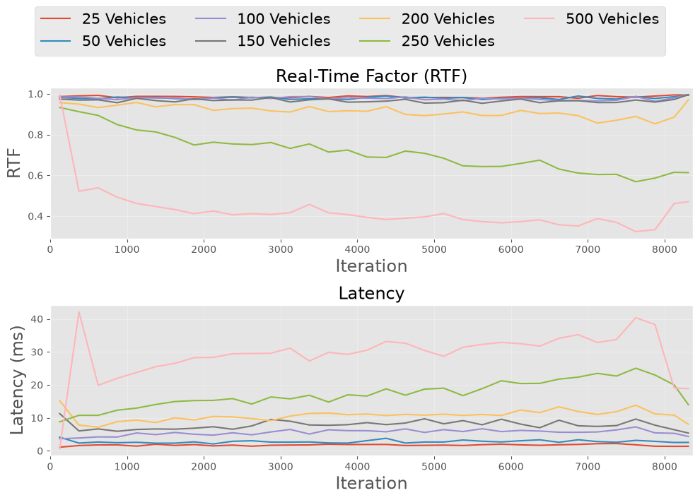
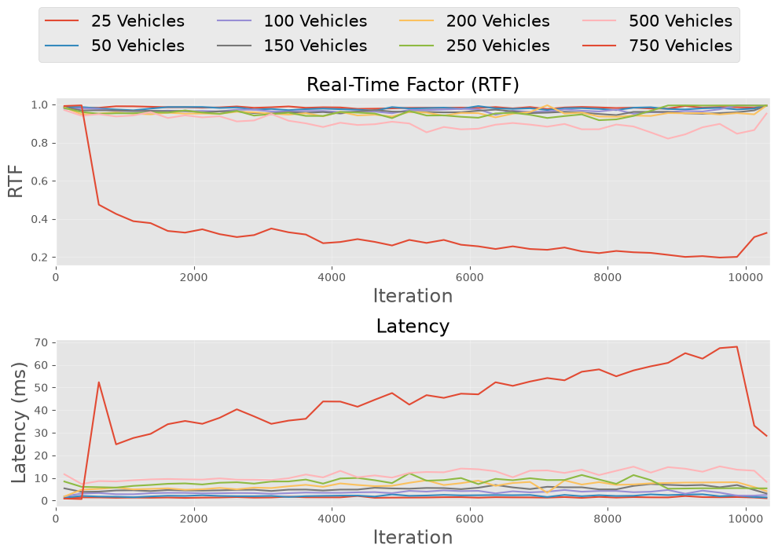

Scalable Testing Sandbox for Autonomous Navigation
A lightweight, plug-and-play Gazebo sandbox for dataset-driven testing of navigation pipelines, with GPU-accelerated field-of-view culling for optimised performance.

Motivation
Local navigation frameworks for crowded traffic scenes need to be tested against realistic, dense conditions, but field testing doesn't scale safely, and existing Simulators either carry heavy computational overhead or abstract away sensor-level detail entirely. None of them populate scenes from real-world traffic behavior, so scenarios end up hand-authored and limited in diversity. Traffic-camera datasets already capture real vehicle trajectories at scale, but bridging that data into a simulator's entity pipeline in real time is non-trivial: simulating a large number of vehicles simultaneously quickly becomes a bottleneck, driving up computational overhead and dragging the real-time factor (RTF) well below 1. This framework counters that with GPU-accelerated field-of-view culling, restricting processing and scene updates to only the vehicles the ego vehicle would actually perceive, enabling stable, flicker-free scene reconstruction at scale without manual scenario authoring.
Approach
Gazebo Ionic was chosen as the base simulator for its lightweight footprint, which keeps large traffic datasets running in real time, unlike heavier, purpose-built driving simulators. The framework communicates over Gazebo's native, C++-based GZ Transport, avoiding a hard ROS2 dependency for core functionality, with an optional ROS2 bridge available for integration with ROS2-based navigation stacks. PyTorch and CUDA handle the computationally heavy part: at every frame, all traffic vehicle states are stacked into tensors and offloaded to the GPU, where the coordinate transformation into the ego vehicle's frame and the subsequent field-of-view filtering are executed as batched operations rather than per-vehicle loops, keeping CPU load low even as vehicle counts grow.
Workflow
The system splits work across two asynchronous threads inside an FOV culling node, plus a companion Gazebo plugin. A pose listener thread subscribes to the world pose topic, isolates the ego vehicle's pose, and continuously updates the ego state used for filtering, independent of dataset playback speed. An FOV filtering thread then pulls the cached per-frame vehicle states at each tick, runs the GPU-accelerated transform-and-filter pass against the latest ego pose, and publishes the filtered set as a single custom Protobuf message, ObjectVelocityArray, to the simulation plugin. The Gazebo plugin, running at a fixed 100 Hz update rate, consumes each incoming message and applies hysteresis to decide which vehicles get spawned, retained, or despawned, with a short grace period to avoid flicker from momentary misses, then updates the scene and applies velocities to advance vehicle motion.
Decoupling these three stages lets dataset playback stay locked to the trajectory data's own timestamps while the ego pose and simulated scene update continuously and independently as the ego vehicle moves.

Results
The framework is capable of replaying any traffic scenario, provided the input dataset conforms to the required format. It reliably simulates 250+ vehicles at a fixed update rate of 100 Hz, sustaining a real-time factor (RTF) well above 0.95 with per-callback latency under 10 ms. User-controlled parameters, the FOV radius and angle, let you further tune this trade-off: narrowing the field of view reduces the number of vehicles retained after culling, easing computational load and enabling real-time performance at even higher vehicle counts.

